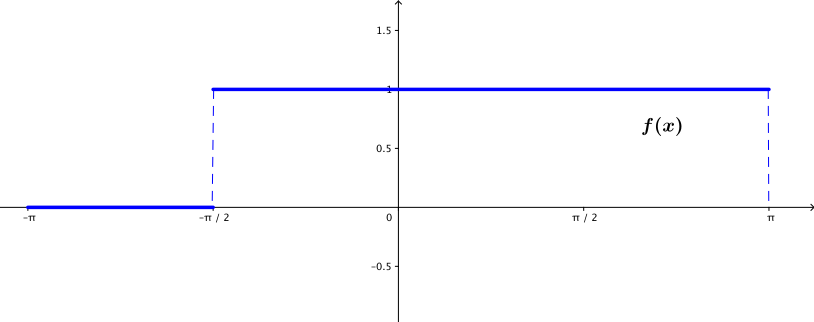
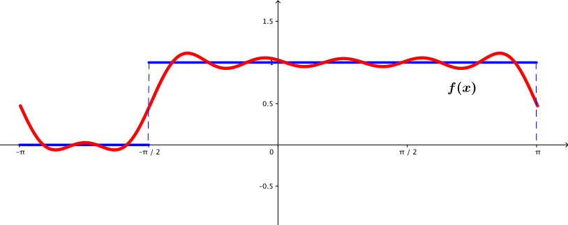
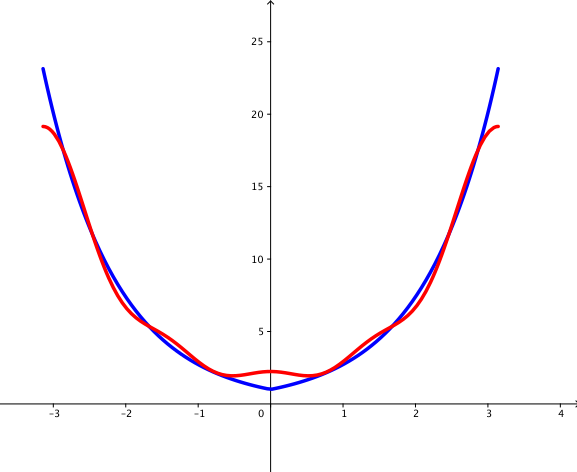

2.2. Fourier Serileri
Kayıt Tarihi:
Son Güncelleme:
Birinci bölümde nasıl bir seriye ihtiyaç duyduğumuzu keşfettik, bu bölümde bu serileri tanımlayacağız; Fourier serileri. Ayrıca bazı örnekler üzerinde bir fonsiyonun kendi Fourier serisine nasıl benzediğini gözlemleyeceğiz.
Anahtar Kelimeler: Fourier katsayıları · Fourier serisiTemel sorumuz, $a>0$ olmak üzere keyfi bir $(\alpha-a,\alpha+a)$ aralığında verilen bir $f$ fonksiyonunun trigonometrik fonksiyonların yakınsak bir serisi olarak yazılıp yazılamayacağıdır. Bundan daha basit olan şu soruyu düşünelim; bir $f:(-\pi,\pi)\rightarrow\mathbb{R}$ fonksiyonu verildiğinde her $x\in(-\pi,\pi)$ için \begin{equation} \label{eq:fourierseri1} \tag{2.2.1} f(x)=\frac{1}{2}a_0+\sum\limits_{n=1}^{\infty}\left(a_n\cos nx+b_n\sin nx\right) \end{equation}eşitliği sağlanacak şekilde $a_n$ ve $b_n$ katsayıları bulunabilir mi? (Burada $a_0$'ın katsayısının neden $1/2$ olması gerektiğini az sonra göreceğiz.) Çalıştığımız aralığın bu şekilde kısıtlanması çok önemli değil, daha sonra göreceğiz ki bir değişken değişimi ile $(-\pi,\pi)$ aralığında elde edilen sonuçları kolaycak keyfi bir aralığa taşıyabiliriz.
Bazı varsayımlar altında bu katsayıların belirlenmesi kolay bir probleme dönüştürülebilir. Farzedelim ki \eqref{eq:fourierseri1} denklemindeki seri yakınsak olsun ve eşitlik sağlansın. Ayrıca bu seri $ (-\pi,\pi) $ aralığında terim terim integrallenebilsin, bu işlem $m\in\{0,1,2,\ldots\}$ olmak üzere \eqref{eq:fourierseri1} eşitliğinin $\sin mx$ veya $\cos mx$ ile çarpılmış hali için de yapılabilabilsin. Bu varsayımlar altında \eqref{eq:fourierseri1} eşitliğini $\cos mx$ ile çarpıp integre edersek \begin{eqnarray} \int_{-\pi}^{\pi}f(x)\cos mx \,dx &=& \frac{1}{2}a_0\int_{\pi}^{\pi}\cos mx \,dx\notag\\ &+& \sum\limits_{n=1}^{\infty}\left[a_n\int_{-\pi}^{\pi}\cos nx\cos mx\,dx\right.\notag\\ && \qquad\qquad\left.+b_n\int_{-\pi}^{\pi}\sin nx\cos mx\,dx\right] \tag{2.2.2} \label{eq:fourierseri2} \end{eqnarray} eşitliğini elde ederiz. Diğer yandan $$ \int_{-\pi}^{\pi}\cos mx\,dx=\left\{\begin{array}{ll} 2\pi,\quad & m=0\text{ ise}\\ 0,\quad & m\neq0\text{ ise} \end{array}\right., $$ $$ \int_{-\pi}^{\pi}\cos nx\cos mx\,dx=\left\{\begin{array}{ll} \pi,\quad & m=n\text{ ise}\\ 0,\quad & m\neq n\text{ ise} \end{array}\right. $$ $$ \int_{-\pi}^{\pi}\sin nx\cos m\,dx=0 $$ eşitlikleri göz önüne alınırsa \eqref{eq:fourierseri2} eşitliğinde $m=0$ yazarsak ikinci terim olan toplam tamamen sıfır olur, $m\neq 0$ yazarsak ise ilk terimdeki integral ve ikinci terim olan toplamdaki $m-$inci terim haricindeki integraller sıfır olur. Böylece $$a_m=\frac{1}{\pi}\int_{-\pi}^{\pi}f(x)\cos mx\,dx,\qquad m=0,1,2,\ldots$$ eşitliği elde edilir. Benzer şekilde \eqref{eq:fourierseri1} eşitliğini $\sin mx$ ile çarpıp integre ederek de $$b_m=\frac{1}{\pi}\int_{-\pi}^{\pi}f(x)\sin mx\,dx\qquad m=1,2,3,\ldots$$ eşitliği elde edilebilir.
Hatırlamak gerekir ki bu eşitlikler varsayımlarımız doğru ise geçerlidir, fakat şu anda bu varsayımların sağlandığını gösteren hiç bir sebep yok. Bunların gerçekten sağlandığını daha sonra ayrıca göstereceğiz.
Tanım 2.2.1 (Fourier Serisi)
Eğer ilgili integraller mevcut ise \begin{equation} \label{eq:fskatsayi1} \tag{2.2.3} a_n=\frac{1}{\pi}\int_{-\pi}^{\pi}f(x)\cos nx\,dx,\qquad n=0,1,2,\ldots \end{equation} ve \begin{equation} \label{eq:fskatsayi2} \tag{2.2.4} b_n=\frac{1}{\pi}\int_{-\pi}^{\pi}f(x)\sin nx\,dx,\qquad n=1,2,3,\ldots \end{equation} sayılarına $f$ fonksiyonunun $(-\pi,\pi)$ aralığındaki Fourier katsayıları denir. Ayrıca bu katsayılar için $$\frac{1}{2}a_0+\sum\limits_{n=1}^{\infty}\left(a_n\cos nx+b_n\sin nx\right)$$ serisine de $f$ fonksiyonunun $(-\pi,\pi)$ aralığındaki Fourier serisi denir.Şimdilik yakınsaklığı göstermediğimiz için $=$ sembolu yerine $\sim$ sembolünü kullanacağız, yani bu durumu $$f(x)\sim\frac{1}{2}a_0+\sum\limits_{n=1}^{\infty}\left(a_n\cos nx+b_n\sin nx\right)$$ olarak ifade edeceğiz.
Örnek 2.2.1
$(-\pi,\pi)$ aralığında $$ f(x):= \left\{ \begin{array}{ll} 0, & \quad -\pi\lt x\lt -\frac{\pi}{2}\text{ ise}\\ 1, & \quad -\frac{\pi}{2}\lt x\lt\pi\text{ ise} \end{array} \right. $$ olarak tanımlanan $f$ fonksiyonunu ele alalım.  Şekil 2.1: Yukarıdaki örnekte bahsedilen fonksiyonun grafiği \eqref{eq:fskatsayi1} ve \eqref{eq:fskatsayi2} eşitliklerini kullanarak Fourier katsayılarını aşağıdaki gibi elde ederiz. Öncelikle \eqref{eq:fskatsayi1} denkleminde $n=0$ yazarsak $$a_0=\frac{1}{\pi}\int_{-\pi/2}^{\pi}dx=\frac{3}{2}$$ elde ederiz. Diğer $a_n$ katsayıları da $n>0$ için \begin{eqnarray*} a_n=\frac{1}{\pi}\int_{-\pi/2}^{\pi}\cos nx\,dx &=& \frac{1}{n\pi}\sin\frac{nx}{2}\bigg|_{-\pi/2}^\pi\\ &=& \left\{ \begin{array}{ll} \frac{1}{n\pi}(-1)^{\frac{n-1}{2}}, & \quad n\text{ tek ise}\\ 0, &\quad n\text{ çift ise} \end{array} \right. \end{eqnarray*} olarak bulunur. Benzer şekilde $b_n$ katsayıları da \begin{eqnarray*} b_n=\frac{1}{\pi}\int_{-\pi/2}^{\pi}\sin nx\,dx &=& -\frac{\cos nx}{\pi n}\bigg|_{-\pi/2}^{\pi}\\ &=& \frac{1}{n\pi}\left(-\cos nx+\cos\frac{n\pi}{2}\right)\\ &=& \left\{ \begin{array}{ll} \frac{1}{n\pi}, & \quad n\text{ tek ise}\\ -\frac{1}{n\pi}\left[1-(-1)^{n/2}\right], &\quad n\text{ çift ise} \end{array} \right. \end{eqnarray*} olarak bulunur. Böylece $f$ fonksiyonunun $(-\pi,\pi)$ aralığında Fourier serisi \begin{eqnarray*} f(x) &\sim& \frac{3}{4}+\frac{1}{\pi}\left(\cos x+\sin x-\sin 2x-\frac{1}{3}\cos3x+\frac{1}{3}\sin3x\right.\\ &&\qquad\qquad\qquad\qquad\left.+\frac{1}{5}\cos 5x+\frac{1}{5}\sin 5x-\frac{1}{3}\sin 6x-\cdots\right)\\ &=& \frac{3}{4}+\frac{1}{\pi}\sum\limits_{n=1}^{\infty}\frac{1}{2n-1}\left[(-1)^{n-1}\cos(2n-1)x+\sin(2n-1)x-\sin(4n-2)x\right] \end{eqnarray*} olarak bulunur.  Şekil 2.2: Yukarıdaki örnekte bahsedilen fonksiyon ve onun Fourier serisiVerilen $f$ fonksiyonunun $(-\pi,\pi)$ aralığında tek veya çift bir fonksiyon olması onun Fourier serisinin hesaplanmasını çok daha kolay bir hale getirir. Sinüs tek, kosinüs ise çift fonksiyon olduğundan aşağıdaki önermenin ispatı açıktır.
Sonuç 2.2.1
$f:(-\pi,\pi)\rightarrow\mathbb{R}$ fonksiyonu için Fourier katsayıları tanımlı olsun, bu durumda- Eğer $f$ fonksiyonu tek ise Fourier serisi $$f(x)\sim\sum\limits_{n=1}^{\infty}b_n\sin nx$$ biçimindedir ve buradaki Fourier katsayıları $$b_n:=\frac{2}{\pi}\int_{0}^{\pi}f(x)\sin nx\,dx,\qquad n=1,2,3,\ldots$$ biçimindedir.
- Eğer $f$ fonksiyonu çift ise Fourier serisi $$f(x)\sim\frac{1}{2}a_0+\sum\limits_{n=1}^{\infty}a_n\cos nx$$ biçimindedir ve buradaki Fourier katsayıları $$a_n:=\frac{2}{\pi}\int_{0}^{\pi}f(x)\cos nx\,dx,\qquad n=0,1,2,\ldots$$ biçimindedir.
Örnek 2.2.2
$f:(-\pi,\pi)\rightarrow\mathbb{R}$ fonksiyonu $f(x):=x$ olarak tanımlansın. Bu fonksiyon tek olduğundan yukarıdaki sonuca göre Fourier serisinde sadece sinüs terimleri bulunur, yani $a_n$ katsayıları sıfırdır. Böylece \begin{eqnarray*} b_n &=& \frac{2}{\pi}\int_{0}^{\pi}x\sin x\,dx\\ &=& \frac{2}{\pi}\left[-x\frac{\cos nx}{n}\bigg|_0^\pi+\frac{1}{n}\int_{0}^{\pi}\cos nx\,dx\right]\\ &=& -2\frac{\cos n\pi}{n}\\ &=& 2\frac{(-1)^{n+1}}{n} \end{eqnarray*} olduğundan hareketle Örnek 1.5.3 ile gördüğümüz gibi $$f(x)\sim\sum\limits_{n=1}^{\infty}2\frac{(-1)^{n+1}}{n}\sin nx$$ elde edilir.
Örnek 2.2.3
$f(x):=e^{|x|}$ olarak tanımlan $f:(-\pi,\pi)\rightarrow\mathbb{R}$ fonksiyonu çift olduğundan Fourier serisinde $b_n$ katsayıları sıfır olacaktır. $a_n$ katsayılarını da $$a_0=\frac{2}{\pi}\int_{0}^{\pi}e^x\,dx=\frac{2}{\pi}(e^\pi-1)$$ ve \begin{eqnarray*} a_n &=& \frac{2}{\pi}\int_{0}^{\pi}e^x\cos nx\,dx\\ &=& \frac{2}{\pi}\frac{e^x}{1+n^2}(n\sin nx+\cos nx)\bigg|_0^\pi\\ &=& \frac{2}{\pi}\frac{e^\pi\cos n\pi-1}{1+n^2} \end{eqnarray*} olarak hesaplarız. Böylece $(-\pi,\pi)$ aralığında $$f(x)\sim\frac{1}{\pi}(e^\pi-1)+\sum\limits_{n=1}^{\infty}\frac{(-1)^ne^\pi-1}{1+n^2}\cos nx$$ olarak elde ederiz.  Şekil 2.3: Yukarıdaki örnekte bahsedilen fonksiyon ve onun Fourier serisi2.1. Giriş
Fourier Analizi
2.3. Riemann-Lebesgue Teoremi